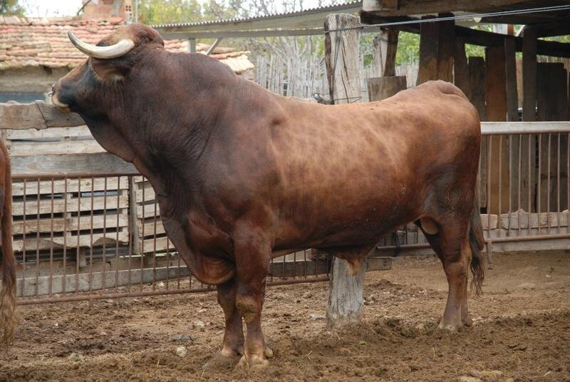

Lista de animales
-
Vaca murciana-levantina
Población y estado de conservación:
El número total de animales es de 19.Descripción:
La filogénesis de esta raza no es conocida, ni fácil de deducir, por su distinta caracterización morfológica al resto de las razas bovinas españolas y con otras de su entorno mediterráneo. Su historia es la de un buen núcleo de trabajo con buenas aptitudes cárnicas. -
Cerdo chato murciano

Población y estado de conservación:
El número total de animales es de 271.Descripción:
Su origen se encuentra encuadrado en el tronco Mediterráneo, a partir del cual se configuró una raza murciana primitiva o cerdo murciano. La formación del actual fue la consecuencia del desarrollo de las industrias cárnicas de la zona, que originó la difusión de un tipo de cerdo mejorado por el cruzamiento del cerdo Murciano primitivo con razas extranjeras importadas. -
Gallina murciana

Población y estado de conservación:
El número total de animales es de unos 300 ejemplares.Descripción:
La gallina de raza murciana, es una raza de tipo mediterráneo, ligera y con orejillas de color blanco. De notable precocidad, las aves empluman pronto y presentan gran actividad vital. Son de doble aptitud productiva: carne de buena calidad y puesta de huevos que podría ser aumentada por selección.